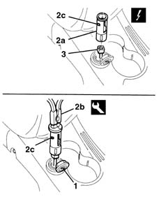
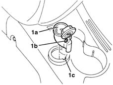

7065C72 front cigar lighter socket/power point - fasten
- Path
- Procedures > 70 FITTINGS > 7065 SEAT BELTS AND ACCESSORIES > 7065C accessories and decorations > 7065C72 front cigar lighter socket/power point - fasten
- Kind
- repair procedure (removal / refitting; the operation number is the code)
- Applies to
- all engines; all production periods
- Interactive page
- https://sloeber94.github.io/elrnDB-lYpsln/en/#/2429699
Applies to: all engines; all production periods
 Removing
Removing
 Refitting
Refitting1. Release and open the cover.
2. Withdraw the cigarette lighter seating (2a) using the special tool (2b).
 | Name | Country |
|---|---|---|
2b | Pliers | 1.876.044.000 |
3. Disconnect the electrical connection.
 | Name | Connector |
|---|---|---|
3 | Cigar lighter/current socket |

Applies to: all engines; all production periods
1. If necessary, remove the ring nut and cover (1a), releasing the retainer (1b) from the housing (1c).

Applies to: all engines; all production periods
Refitting
RemovingCheck that the cigarette lighter seating is undamaged.
Position the ring nut and cover attaching the retainer in the housing.
Connect the electrical connection.
Fit the cigar lighter housing.
Check that the current socket is working properly.
Close the lid.